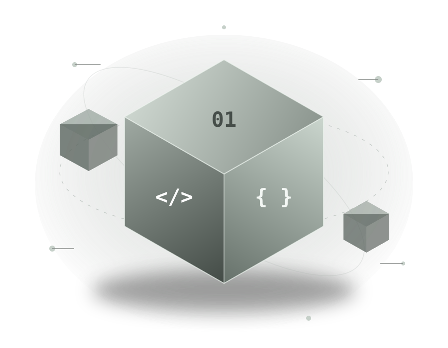
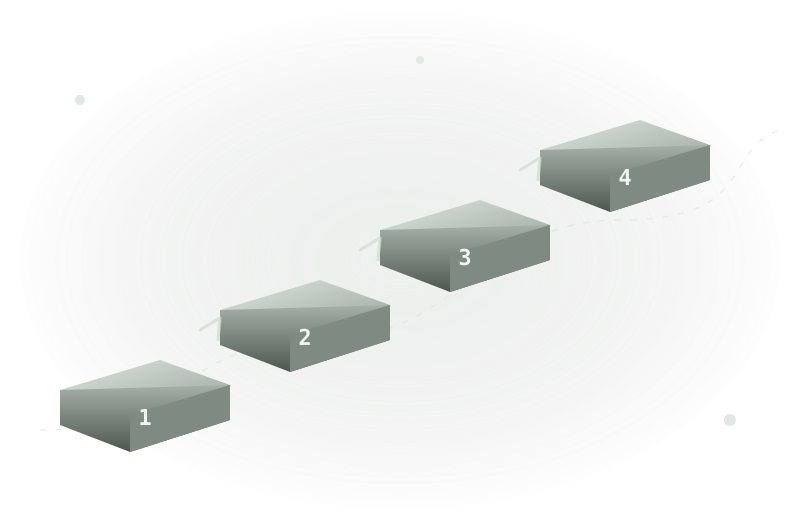
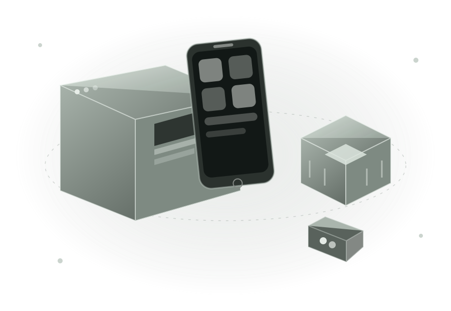

Python
الذكاء الاصطناعي وتحليل البيانات
سهل التعلّمدليل مبسّط في 12 محطة
كيف نُعلّم الحاسوب أن يفكّر؟ رحلة قصيرة من الفكرة الأولى إلى أول سطر من الكود.

01 · الفكرة
هي كتابة تعليمات واضحة ومرتّبة ينفّذها الحاسوب لأداء مهمة معيّنة.
تخيّلها كوصفة طبخ: الحاسوب لا يخمّن، بل ينفّذ ما تكتبه بدقّة.
02 · الأدوات
كل لغة أداة لمهمة؛ اختر ما يناسب هدفك.
الذكاء الاصطناعي وتحليل البيانات
سهل التعلّمالمواقع والتطبيقات التفاعلية
لغة الويبتطبيقات أندرويد والأنظمة الكبيرة
موثوقةالألعاب والبرامج عالية الأداء
سريعة03 · طريقة التفكير
المشكلة لا تُحل دفعة واحدة، بل تُقسّم إلى خطوات صغيرة.
حدّد المطلوب بدقّة
اجزئه إلى مهام
حوّل الحل إلى كود
اختبر وأصلح الخطأ
هذه هي «الخوارزمية»: مجموعة خطوات مرتّبة للوصول إلى نتيجة.
04 · الأساسيات
المتغير صندوق صغير يحفظ قيمة لتستخدمها لاحقاً.
name = "سارة"
age = 25
print(name, age)غيّر القيمة في مكان واحد، ويتحدّث كل ما يستخدمها.
05 · التحكّم
الشرط يختار طريقاً، والحلقة تعمل مرة بعد مرة.
if age >= 18:
print("بالغ")
else:
print("صغير")يُنفّذ اختياراً واحداً حسب الشرط.
for i in range(3):
print("مرحباً")يكرّر نفس العمل ثلاث مرات دون تكرار الكتابة.
06 · التنظيم
كتلة كود تُسمّيها مرة، وتستخدمها كلما احتجتها.
def greet(name):
return "مرحباً " + name
print(greet("سارة"))نفس الفكرة · كود أقل · صيانة أسهل
07 · خريطة الطريق
مسار بسيط في أربع محطات، لا تحتاج لترتيب مثالي.
بناء الصفحة وشكلها
إضافة التفاعل والحركة
المنطق وتحليل البيانات
طبّق ما تعلّمته

08 · بيئة العمل
أربع أدوات تكفي للبداية، كلها مجانية.
حيث تكتب وتنظّم ملفاتك (مثل VS Code).
لترى نتيجة عملك فوراً وتختبرها.
أوامر سريعة لتشغيل البرامج.
يحفظ نسخ عملك ويساعدك على التراجع.
09 · الواقع
كل تطبيق تستخدمه هو كود يعمل خلف الشاشة.
البرمجة ليست مهنة فقط، بل طريقة لحل المشكلات اليومية.

10 · نصائح
تدرّب قليلاً كل يوم، وإن كانت 15 دقيقة.
ابدأ بمشروع صغير ينتهي في يومين.
اقرأ أكواد الآخرين وتعلّم من أسلوبهم.
لا تخف من الأخطاء؛ هي جزء من التعلّم.
اسأل مبكراً، وشارك عملك مع غيرك.
الخلاصة
لا تحتاج أن تعرف كل شيء؛ يكفي أن تبدأ وتستمر.
شكراً لوقتك 🌿
← التالي · → السابق · مسافة للتقدّم